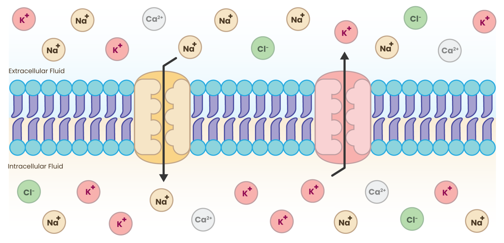
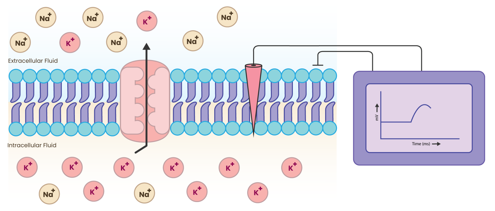
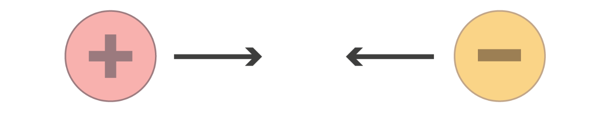
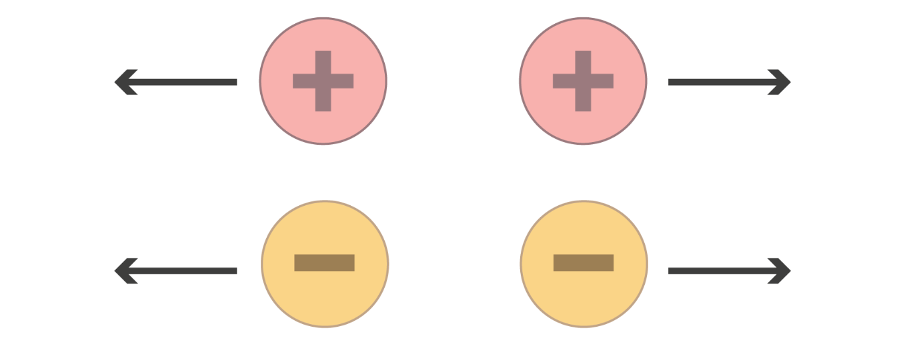
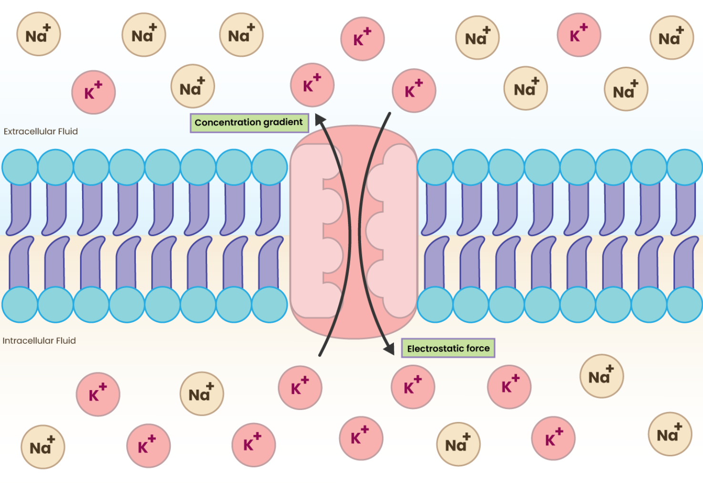

Module 2: Understanding the Resting Potential#
The resting membrane potential of a neuron is the electrical potential difference (voltage) across the neuron’s plasma membrane at which the neuron is in a non-excited state. [1] Another way to define it is as the electrical potential difference across a neuron’s plasma membrane when the neuron is not actively sending signals. It represents the “ready state” of the neuron, where it is stable, polarized, and prepared to fire an action potential when stimulated.
Understanding the resting potential is essential because it forms the electrical basis of neuronal excitability. Before studying the resting potential in detail, it is indeed important to understand the electrical properties of neurons, since neurons primarily communicate through electrical signals (changes in membrane potential) and chemical synapses.
2.1 Fundamentals of electricity#
Let’s review some fundamental concepts of electricity that will help us explore the electrical properties of neurons.
2.1.1 Current#
Current is defined as the rate of flow of electrical charge. In metals, it is due to the movement of free electrons, while in neurons, it is due to the movement of ions like sodium (Na+), potassium (K+), Chloride (Cl-), and Calcium (Ca2+) across the membrane, which is essential for generating electrical signals.

Current: The movement of ions across the membrane#
2.1.2 Voltage#
It is the electrical potential that drives the flow of charge. In the context of neurons, voltage refers to the electric potential difference across the neuron’s membrane, which is critical for generating and transmitting electrical signals.

Voltage: electric potential difference across the neuron’s membrane#
To better understand electric potential, it’s essential to define electrostatic force.
2.1.3 Electrostatic force#
It is the force that arises due to the interaction between charged objects or particles. These forces are part of the fundamental forces of nature and are described by Coulomb’s law.

Electrostatic force#
2.1.4 Coulomb’s law#
The electrostatic force (F) between two point charges (q1 and q2) is given by:
Equation 1:
F = Electrostatic force
k = Coulomb constant (8.99×10*9 Nm*2/C*2)
q1,q2 = magnitudes of charges
r = distance between the centers of the two charges
Additional Info
Coulomb’s law was first published in 1785 by French physicist Charles-Augustin de Coulomb.
2.1.5 Law of attraction & repulsion#
Attractive force: If the charges are of opposite signs (positive and negative), the force is attractive in nature.

Attractive force#
Repulsive Force: If the charges are of the same signs (both positive or both negative), the force is repulsive in nature.

Repulsive force#
2.2 Resting Membrane Potential#
All living cells have an electrical potential difference across their cell membrane. The inside of the cell is negative compared to the outside. This electrical difference is called the membrane potential, created because ions line up on both sides of the membrane. When a cell is not active, its membrane potential is called the resting membrane potential (RMP) or transmembrane potential.

Resting potential#
2.2.1 Key features of Resting Membrane Potential (RMP)#
Different tissues have different RMP values. For example, neurons typically have an RMP of around -70 mV.
Tissue |
Typical RMP (mV) |
|---|---|
Neuron |
-70 |
Skeletal muscle |
-90 |
Cardiac muscle |
-90 |
Smooth muscle |
Variable |
When a neuron receives a stimulus, its membrane potential changes. The interior of the cell becomes positive due to depolarization, and this rapid shift in voltage is known as an action potential.
The RMP is crucial because it sets the starting point for depolarization and helps determine the strength and duration of the action potential.
The RMP mainly arises from unequal distribution of ions across the membrane.
Note
The RMP is influenced by 2 main factors:
Selective permeability of the membrane to different ions
Forces that drive ion movement across the membrane (diffusion and electrostatic forces).
2.2.2. Selective permeability of the membrane#
K+ permeability is higher than Na+ permeability at rest, which means that more K+ ions can move across the membrane compared to Na+ ions. This contributes to the negative resting potential because K+ ions tend to diffuse out of the cell, leaving behind a net negative charge inside the cell.
The membrane is also permeable to other ions like chloride (Cl-) and organic anions (A⁻), which also contribute to the resting potential.
The membrane is impermeable to proteins and other large organic molecules.
2.2.3 Forces that drive ion movement#
1. Diffusion [1]#
Ion Concentration Gradients#
Neurons maintain specific concentrations of ions, particularly sodium (Na+), potassium (K+), chloride (Cl-), and organic anions (A⁻), across their membrane. Typically, there is a higher concentration of K+ inside the neuron and a higher concentration of Na+ outside.
Movement of Ions#
Due to the concentration gradient, ions tend to move from areas of higher concentration to lower concentration through channels in the neuron’s membrane. For example, K+ ions diffuse out of the neuron, while Na+ ions tend to diffuse into the neuron.

Diffusion of ions#
2. Electrostatic forces [1]#
Electrostatic forces are essential in creating the resting potential of neurons. It arises from the movement of ions like potassium and sodium, which are influenced by concentration gradients and the attractive/repulsive forces between charged particles. The unequal distribution of these ions across the membrane, combined with electrostatic forces, results in a negative charge inside the neuron relative to the outside, leading to a typical resting potential of around -70 mV, which is crucial for the neuron’s ability to generate action potentials and communicate with other neurons.
Electrostatic force help determine how ions arrange on both sides of the membrane and together with selective permeability, it plays a major role in establishing the resting membrane potential.
Note
- The voltage across a membrane is a comparative measurement. Neuroscientists consistently use the outside of the cell as the reference point for measuring the voltage across the membrane. For instance, if the inside of the cell is 70 mV more negative than the outside, we would express the voltage as -70 mV. [1]
Voltage range of membrane potential : -90 mV to +60 mV
Voltage of neuron RMP : Approx -70 mV
2.3 Equilibrium potential#
The equilibrium potential (also known as the Nernst potential) for a specific ion is the membrane potential at which the net flow of that ion across the membrane is zero. At this potential, the concentration gradient (diffusive forces) is balanced by the electrical gradient (electrostatic forces). This means that the electrostatic forces pulling the ion into the cell are exactly balanced by the concentration gradient pushing it out (or vice versa). [1]

Equilibrium potential#
Nernst Equation: The equilibrium potential for a specific ion can be calculated using the Nernst equation: [2]
Where:
Eion is the equilibrium potential for the ion.
R is the universal gas constant.
T is the absolute temperature in Kelvin.
z is the valence (charge) of the ion.
F is Faraday’s constant.
Iout and Iin are the concentrations of the ion outside and inside the cell, respectively.
Equilibrium Potentials for major ions: [1]
K+: Approximately -90 mV (when K+ has an intracellular concentration of 120 mM and an extracellular concentration of 4 mM)
Na+: Approximately +60 mV (when Na+ has an intracellular concentration of 14 mM and an extracellular concentration of 140 mM)
2.4 Goldman-Hodgkin-Katz Equation [3]#
The Goldman equation, often referred to as the GHK equation, calculates the resting potential of a cell based on the permeability and concentrations of multiple ions. It accounts for the relative contributions of different ions to the resting potential. The equation is as follows:
where:
Vm is the membrane potential
R is the universal gas constant
T is absolute temperature in Kelvin
F is Faraday’s constant
PX is permeability of ion X
Xin is concentration of ion X inside the cell
Xout is concentration of ion X outside the cell
Note
The Nernst potential (or equilibrium potential) indicates the voltage for a specific ion, but since the resting potential is affected by multiple ions, we use the Goldman equation to calculate the overall resting potential of the cell. [1]
2.5 Ion channels#
Ion channels (also called ion filters or ion-selective channels) are special proteins that control the movement of ions across the cell membrane. [4] These channels help certain ions - like sodium (Na+), potassium (K+), calcium (Ca2+), or chloride (Cl-) - move quickly across the membrane based on concentration gradient (i.e. from high to low concentration). [5]
There are majorly two types of ion channels:
Leak Channels: These are mostly open, letting ions flow freely based on their concentration gradient.
Voltage-Gated Channels: These channels open and close in response to changes in the cell membrane potential. They are important for generating and transmitting electrical signals, like action potentials.
Ion channels are highly selective proteins, meaning they allow only certain ions to pass through while blocking others. For example, potassium channels primarily allow potassium ions (K⁺) to pass, while sodium channels primarily allow sodium ions (Na⁺). This selectivity is essential for maintaining proper electrical signaling in cells.
How does this selectivity work?
One might assume that an ion channel could block all positive ions by placing a positive charge at its opening. However, this would not work because many ions that need to pass through the membrane, such as sodium (Na⁺) and potassium (K⁺), are both positively charged. Therefore, ion channels cannot rely solely on charge to distinguish between ions.
Another possible explanation could be ion size. The bare sodium ion has a radius of approximately 116 picometers, while the bare potassium ion is larger at about 152 picometers. However, in biological fluids ions are not present as bare ions; they are surrounded by water molecules that form a hydration shell due to electrostatic interactions.
Sodium ions have a higher charge density than potassium ions, which means they attract water molecules more strongly and hold a tighter hydration shell. As a result, hydrated sodium ions are effectively larger and more tightly bound to water molecules than hydrated potassium ions.
Passage through ion channels#
When an ion approaches an ion channel, it cannot pass through the pore while fully surrounded by its hydration shell. The ion must first partially shed these water molecules, a process that requires energy. Ion channels contain a narrow region called the selectivity filter, formed by a specific arrangement of amino acids. The atoms in this region are positioned in such a way that they can replace the water molecules around a particular ion, stabilizing it as it moves through the channel.
In sodium channels, the arrangement of amino acids stabilizes sodium ions after they lose part of their hydration shell, allowing Na⁺ to pass efficiently. Potassium ions do not interact with this filter as effectively, making their passage energetically unfavorable.
In contrast, potassium channels have a selectivity filter whose oxygen atoms are spaced at distances that perfectly coordinate potassium ions. This arrangement stabilizes dehydrated K⁺ ions, while sodium ions are too small to interact properly with the filter and therefore cannot pass through efficiently.
Thus, ion channels achieve selectivity not simply by charge or size alone, but through a precise interaction between the ion, its hydration shell, and the amino acids forming the channel’s selectivity filter.
2.6 Sodium-Potassium pump#
The Na⁺/K⁺-ATPase is an antiport pump present in all eukaryotic cells. It transports three Na⁺ ions out of the cell and two K⁺ ions into the cell against their concentration gradients, helping maintain high intracellular K⁺ and low intracellular Na⁺ levels.
Structure of the Pump
The Na⁺/K⁺-ATPase is a heterodimer consisting of a large α subunit (the catalytic unit) and a smaller β subunit. The α subunit contains intracellular binding sites for three Na⁺ ions, ATP, and phosphate, and extracellular binding sites for two K⁺ ions and ouabain.
Mechanism of Action
When three Na⁺ ions and ATP bind on the cytoplasmic side of the α subunit, ATP is hydrolysed to ADP and Pi. The phosphate attaches to an aspartate residue on the α subunit, activating the pump and causing a conformational change. This results in the outward transport of Na⁺ and inward movement of K⁺.
Electrogenic Nature
Because the pump moves more positive charges out of the cell (three Na⁺) than it brings in (two K⁺), it is electrogenic, contributing to the negative resting membrane potential. The pump has a coupling ratio of 3:2, meaning that for every three Na⁺ ions pumped out, two K⁺ ions are pumped in.
where:
ATP is Adenosine triphosphate
ADP is Adenosine diphosphate
Pi is the phosphate ion
Note
Active Transport is a process that involves the movement of molecules from a region of lower concentration to an area of higher concentration against their natural concentration gradient. [6]
2.6.1 Functions of the Na⁺/K⁺ ATPase#
1. Cytosolic Ion Concentration#
The Na⁺/K⁺ pump prevents sodium ions from accumulating inside the cell and stops potassium ions from leaking out along their concentration gradients. By pumping three Na⁺ out and two K⁺ in, it maintains a high intracellular K⁺ concentration and a low intracellular Na⁺ concentration, which is essential for normal cellular function.
2. Regulation of Cell Volume#
By maintaining the correct ionic balance across the membrane, the pump indirectly controls the movement of water into and out of the cell. This helps preserve the intracellular water content and maintains normal cell volume. When pump activity fails, ions accumulate inside the cell, water follows osmotically, and the cell may swell and eventually rupture.
3. Protein Synthesis#
A high level of intracellular potassium is required for proper ribosomal function and protein synthesis. The Na⁺/K⁺ pump maintains this high K⁺ concentration, making it essential for the initiation and continuation of protein synthesis within the cell.
4. Resting Membrane Potential#
The Na⁺/K⁺ ATPase contributes to the resting membrane potential by continuously maintaining the ion gradients across the membrane. Additionally, because it pumps out more positive charges (three Na⁺) than it brings in (two K⁺), it creates a slight electrical imbalance that helps keep the inside of the cell more negative, thereby supporting the resting membrane potential.
5. Hormone Actions#
Several hormones exert part of their effects through the Na⁺/K⁺ pump. Hormones such as insulin, thyroid hormones, and aldosterone can increase pump activity. Through this regulation, the pump plays a role in hormonal control of metabolism, ion balance, and overall cellular homeostasis.

Sodium-Potassium Pump#
Note
The pump helps maintain the electrochemical gradient essential for the resting potential, typically around -70 mV in neurons. This gradient is crucial for the generation of action potentials. [7]
The action potential is a rapid, transient change in the electrical potential across a neuron’s membrane that allows it to transmit signals along its axon. It is the fundamental mechanism by which neurons communicate with one another and other cells.
Fun Fact
The sodium-potassium pump consumes approximately 70% (2/3rd) energy of the nerve cell. [8]
2.6.2 Gibbs-Donnan Effect#
The Gibbs-Donnan effect describes how ions distribute themselves across a semipermeable membrane when some charged particles cannot cross the membrane. It explains why cells develop small electrical differences and osmotic pressure changes.
1. Charge Difference: The cytoplasm contains large negatively charged proteins and phosphates that cannot diffuse out of the cell. Because of these trapped negative ions:
Positively charged ions (like K⁺) are drawn into the cell to balance the negative charge.
Negatively charged ions (like Cl⁻) are repelled from the cell,
This creates a charge difference across the membrane, contributing to the small negative resting potential.
Osmotic Pressure:
The intracellular concentration of ions is higher than the extracellular concentration due to the trapped negative ions and the influx of K⁺.
This creates an osmotic gradient that causes water to move into the cell, increasing the cell’s volume.
This would normally cause the cell to swell and potentially burst.
Role of sodium-potassium pump#
The sodium-potassium pump helps counteract the Gibbs-Donnan effect by actively transporting Na⁺ out of the cell and K⁺ into the cell. This helps maintain the ionic balance and prevents excessive swelling of the cell due to osmotic pressure. By maintaining the proper ion gradients, the pump ensures that the cell remains stable and functional despite the presence of impermeable charged particles.
Prevent excessive swelling
Maintain ionic balance
Ensure cell stability and function
2.7 Summary#
This module explains the resting membrane potential (RMP), the stable electrical voltage across a neuron’s membrane when the cell is not actively transmitting signals. The resting potential arises from the unequal distribution of ions across the membrane and the selective permeability of ion channels, particularly the higher permeability of potassium (K⁺) compared to sodium (Na⁺). Fundamental electrical concepts such as current, voltage, electrostatic forces, and Coulomb’s law were reviewed in this module to understand how ions move and generate membrane voltage. This module also introduced the Nernst equation for calculating the equilibrium potential of individual ions and the Goldman-Hodgkin-Katz (GHK) equation, which explains how multiple ions contribute to the overall membrane potential. Additionally, we examined the roles of ion channels and the sodium-potassium pump, which maintains ionic gradients essential for neuronal electrical stability.
Building on this foundation, Module 3 will explore passive membrane properties, such as resistance, capacitance, and time constants, which determine how electrical signals spread within neurons. After understanding how signals propagate locally, Module 4 will introduce the action potential, the rapid electrical signal that allows neurons to communicate over long distances.